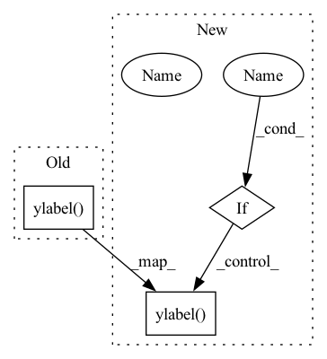

Pattern ID :1786

Before Change
plt.subplot(1, 2, 2)
plt.hist2d(D1.flatten(), D3.flatten(), bins=50)
plt.xlabel("Fast Marching")
plt.ylabel("FastGeodis")
plt.title("Joint histogram\nFast Marching vs. FastGeodis")
// plt.gca().set_aspect("equal", adjustable="box")
plt.tight_layout()
After Change
)
plt.show()
if SHOW_JOINT_HIST:
plt.figure()
plt.subplot(1, 2, 1)
plt.hist2d(D1.flatten(), D2.flatten(), bins=50)
plt.xlabel("Fast Marching")
plt.ylabel("GeodisTK")
plt.title("Joint histogram\nFast Marching vs. GeodisTK")
// plt.gca().set_aspect("equal", adjustable="box")
plt.subplot(1, 2, 2)
plt.hist2d(D1.flatten(), D3.flatten(), bins=50)
plt.xlabel("Fast Marching")
plt.ylabel("FastGeodis")
plt.title("Joint histogram\nFast Marching vs. FastGeodis")
// plt.gca().set_aspect("equal", adjustable="box")
plt.tight_layout()
In pattern: SUPERPATTERN
Frequency: 3
Non-data size: 3
Instances
Fragment ID: 8240349
Project Name: masadcv/fastgeodis
Commit Name: 4049eafb57a41e1192e8711b6cae332d09e57a90
Time: 2022-06-25
Author: muhammad.asad@kcl.ac.uk
File Name: samples/demo3d.py
M Class Name: AnonimousClass
N Class Name: AnonimousClass
M Method Name: demo_geodesic_distance3d(0)
N Method Name: demo_geodesic_distance3d(0)
M Parent Class:
N Parent Class:
M File Name: samples/demo3d.py
N File Name: samples/demo3d.py
M Start Line: 114
M End Line: 130
N Start Line: 30
N End Line: 133
'>
Before Change
plt.subplot(1, 3, 1)
plt.hist2d(fastmarch_output.flatten(), geodistkraster_output.flatten(), bins=50)
plt.xlabel("Fast Marching")
plt.ylabel("GeodisTK")
plt.title("Joint histogram\nFast Marching vs. GeodisTK")
// plt.gca().set_aspect("equal", adjustable="box")
plt.title("Joint histogram\nFast Marching vs. FastGeodis (cpu)")
After Change
def evaluate_geodesic_distance2d(image, seed_pos):
SHOW_JOINT_HIST = False
// get image and create seed image
Image = np.asanyarray(image, np.float32)
Seed = np.zeros((Image.shape[0], Image.shape[1]), np.float32)
Seed[seed_pos[0]][seed_pos[1]] = 1
// run and time each method
iterations = 2
v = 1e10
lamb = 1.0
tic = time.time()
fastmarch_output = GeodisTK.geodesic2d_fast_marching(Image, Seed.astype(np.uint8))
fastmarch_time = time.time() - tic
tic = time.time()
geodistkraster_output = geodesic_distance_2d(
Image, Seed.astype(np.uint8), lamb, iterations
)
geodistkraster_time = time.time() - tic
if Image.ndim == 3:
Image = np.moveaxis(Image, -1, 0)
else:
Image = np.expand_dims(Image, 0)
device = "cpu"
It = torch.from_numpy(Image).unsqueeze_(0).to(device)
St = (
torch.from_numpy(1 - Seed.astype(np.float32))
.unsqueeze_(0)
.unsqueeze_(0)
.to(device)
)
tic = time.time()
fastraster_output_cpu = np.squeeze(
FastGeodis.generalised_geodesic2d(It, St, v, lamb, iterations).cpu().numpy()
)
fastraster_time_cpu = time.time() - tic
device = "cuda" if It.shape[1] == 1 and torch.cuda.is_available() else None
if device:
It = It.to(device)
St = St.to(device)
tic = time.time()
fastraster_output_gpu = np.squeeze(
FastGeodis.generalised_geodesic2d(It, St, v, lamb, iterations).cpu().numpy()
)
fastraster_time_gpu = time.time() - tic
print("Runtimes:")
print(
"Fast Marching: {:.6f} s \nGeodisTk raster: {:.6f} s \nFastGeodis CPU raster: {:.6f} s".format(
fastmarch_time, geodistkraster_time, fastraster_time_cpu
)
)
if device:
print("FastGeodis GPU raster: {:.6f} s".format(fastraster_time_gpu))
plt.figure(figsize=(18, 6))
plt.subplot(2, 4, 1)
plt.imshow(image, cmap="gray")
plt.autoscale(False)
plt.plot([seed_pos[0]], [seed_pos[1]], "ro")
plt.axis("off")
plt.title("(a) Input image")
plt.subplot(2, 4, 2)
plt.imshow(fastmarch_output)
plt.axis("off")
plt.title("(b) Fast Marching | ({:.4f} s)".format(fastmarch_time))
plt.subplot(2, 4, 3)
plt.imshow(fastraster_output_cpu)
plt.axis("off")
plt.title("(c) FastGeodis (cpu) | ({:.4f} s)".format(fastraster_time_cpu))
plt.subplot(2, 4, 6)
plt.imshow(geodistkraster_output)
plt.axis("off")
plt.title("(d) GeodisTK | ({:.4f} s)".format(geodistkraster_time))
if device:
plt.subplot(2, 4, 7)
plt.imshow(fastraster_output_gpu)
plt.axis("off")
plt.title("(e) FastGeodis (gpu) | ({:.4f} s)".format(fastraster_time_gpu))
diff = (
abs(fastmarch_output - fastraster_output_cpu) / (fastmarch_output + 1e-7) * 100
)
plt.subplot(2, 4, 4)
plt.imshow(diff)
plt.axis("off")
plt.title(
"(f) Fast Marching vs. FastGeodis (cpu)\ndiff: max: {:.4f} | min: {:.4f}".format(
np.max(diff), np.min(diff)
)
)
if device:
diff = (
abs(fastmarch_output - fastraster_output_gpu)
/ (fastmarch_output + 1e-7)
* 100
)
plt.subplot(2, 4, 8)
plt.imshow(diff)
plt.axis("off")
plt.title(
"(g) Fast Marching vs. FastGeodis (gpu)\ndiff: max: {:.4f} | min: {:.4f}".format(
np.max(diff), np.min(diff)
)
)
// plt.colorbar()
plt.show()
if SHOW_JOINT_HIST:
plt.figure(figsize=(14, 4))
plt.subplot(1, 3, 1)
plt.hist2d(fastmarch_output.flatten(), geodistkraster_output.flatten(), bins=50)
plt.xlabel("Fast Marching")
plt.ylabel("GeodisTK")
plt.title("Joint histogram\nFast Marching vs. GeodisTK")
// plt.gca().set_aspect("equal", adjustable="box")
plt.title("Joint histogram\nFast Marching vs. FastGeodis (cpu)")
'>
Fragment ID: 8240345
Project Name: masadcv/fastgeodis
Commit Name: 4049eafb57a41e1192e8711b6cae332d09e57a90
Time: 2022-06-25
Author: muhammad.asad@kcl.ac.uk
File Name: samples/demo2d.py
M Class Name: AnonimousClass
N Class Name: AnonimousClass
M Method Name: evaluate_geodesic_distance2d(2)
N Method Name: evaluate_geodesic_distance2d(2)
M Parent Class:
N Parent Class:
M File Name: samples/demo2d.py
N File Name: samples/demo2d.py
M Start Line: 148
M End Line: 171
N Start Line: 27
N End Line: 176
'>
Before Change
plt.subplot(1, 2, 2)
plt.hist2d(fastmarch_output.flatten(), fastraster_output_cpu.flatten(), bins=50)
plt.xlabel("Fast Marching")
plt.ylabel("FastGeodis")
plt.title("Joint histogram\nFast Marching vs. FastGeodis")
// plt.gca().set_aspect("equal", adjustable="box")
plt.tight_layout()
After Change
)
fastraster_time_cpu = time.time() - tic
device = (
"cuda" if input_image_pt.shape[1] == 1 and torch.cuda.is_available() else None
)
if device:
input_image_pt = input_image_pt.to(device)
seed_image_pt = seed_image_pt.to(device)
tic = time.time()
fastraster_output_gpu = np.squeeze(
FastGeodis.generalised_geodesic3d(
input_image_pt, seed_image_pt, spacing, 1e10, 1.0, 4
)
.detach()
.cpu()
.numpy()
)
fastraster_time_gpu = time.time() - tic
print(
"Toivanen"s CPU raster: {:.6f} s \nFastGeodis CPU raster: {:.6f} s".format(
toivanenraster_time, fastraster_time_cpu
)
)
if device:
print("FastGeodis GPU raster: {:.6f} s".format(fastraster_time_gpu))
img_toivanenraster_output = sitk.GetImageFromArray(toivanenraster_output)
img_toivanenraster_output.SetSpacing(spacing_raw)
sitk.WriteImage(
img_toivanenraster_output, os.path.join(image_folder, "image3d_dis2.nii.gz")
)
img_d3 = sitk.GetImageFromArray(fastraster_output_cpu)
img_d3.SetSpacing(spacing_raw)
sitk.WriteImage(img_d3, os.path.join(image_folder, "image3d_dis3.nii.gz"))
input_image_sub = sitk.GetImageFromArray(input_image)
input_image_sub.SetSpacing(spacing_raw)
sitk.WriteImage(input_image_sub, os.path.join(image_folder, "image3d_sub.nii.gz"))
input_image = input_image * 255 / input_image.max()
input_image = np.asarray(input_image, np.uint8)
image_slice = input_image[10]
toivanenraster_output_slice = toivanenraster_output[10]
fastraster_output_cpu_slice = fastraster_output_cpu[10]
if device:
fastraster_output_gpu_slice = fastraster_output_gpu[10]
plt.figure(figsize=(18, 6))
plt.subplot(2, 5, 1)
plt.imshow(image_slice, cmap="gray")
plt.autoscale(False)
plt.plot([70], [60], "ro")
plt.axis("off")
plt.title("(a) Input image")
plt.subplot(2, 4, 2)
plt.imshow(toivanenraster_output_slice)
plt.axis("off")
plt.title("(b) Toivanen"s Raster (cpu) | ({:.4f} s)".format(toivanenraster_time))
plt.subplot(2, 4, 3)
plt.imshow(fastraster_output_cpu_slice)
plt.axis("off")
plt.title("(c) FastGeodis (cpu) | ({:.4f} s)".format(fastraster_time_cpu))
plt.subplot(2, 4, 6)
plt.imshow(toivanenraster_output_slice)
plt.axis("off")
plt.title("(d) Toivanen"s Raster (cpu) | ({:.4f} s)".format(toivanenraster_time))
if device:
plt.subplot(2, 4, 7)
plt.imshow(fastraster_output_gpu_slice)
plt.axis("off")
plt.title("(e) FastGeodis (gpu) | ({:.4f} s)".format(fastraster_time_gpu))
diff = (
abs(toivanenraster_output - fastraster_output_cpu) / (toivanenraster_output + 1e-7) * 100
)
diff_vol = toivanenraster_output - fastraster_output_cpu
diff_slice = diff_vol[10]
plt.subplot(2, 4, 4)
plt.imshow(diff_slice)
plt.axis("off")
plt.title(
"(f) Fast Marching vs. FastGeodis (cpu)\ndiff: max: {:.4f} | min: {:.4f}".format(
np.max(diff), np.min(diff)
)
)
if device:
diff = (
abs(toivanenraster_output - fastraster_output_gpu)
/ (toivanenraster_output + 1e-7)
* 100
)
diff_vol = toivanenraster_output - fastraster_output_gpu
diff_slice = diff_vol[10]
plt.subplot(2, 4, 8)
plt.imshow(diff_slice)
plt.axis("off")
plt.title(
"(g) Fast Marching vs. FastGeodis (gpu)\ndiff: max: {:.4f} | min: {:.4f}".format(
np.max(diff), np.min(diff)
)
)
plt.show()
if SHOW_JOINT_HIST:
plt.figure(figsize=(12, 6))
plt.subplot(1, 2, 1)
plt.hist2d(toivanenraster_output.flatten(), fastraster_output_cpu.flatten(), bins=50)
plt.xlabel("Toivanen"s Raster (cpu)")
plt.ylabel("FastGeodis (cpu)")
plt.title("Joint histogram\nToivanen"s Raster (cpu) vs. FastGeodis (cpu)")
if device:
plt.subplot(1, 2, 2)
plt.hist2d(toivanenraster_output.flatten(), fastraster_output_gpu.flatten(), bins=50)
plt.xlabel("Toivanen"s Raster (cpu)")
plt.ylabel("FastGeodis (gpu)")
plt.title("Joint histogram\nToivanen"s Raster (cpu) vs. FastGeodis (cpu)")
// plt.gca().set_aspect("equal", adjustable="box")
plt.tight_layout()
'>
Fragment ID: 8240344
Project Name: masadcv/fastgeodis
Commit Name: a1906e989649c1f0b8fdbed147c1d576ac5c41f3
Time: 2022-07-22
Author: muhammad.asad@kcl.ac.uk
File Name: samples/demo3d.py
M Class Name: AnonimousClass
N Class Name: AnonimousClass
M Method Name: demo_geodesic_distance3d(2)
N Method Name: demo_geodesic_distance3d(2)
M Parent Class:
N Parent Class:
M File Name: samples/demo3d.py
N File Name: samples/demo3d.py
M Start Line: 33
M End Line: 204
N Start Line: 17
N End Line: 181